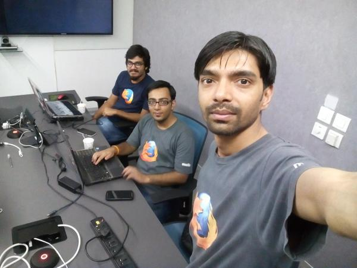
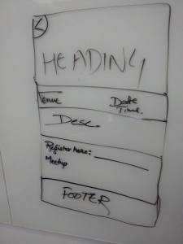

Writing after a long time. Have been occupied by a lot of things and that's why the official site of Mozilla Delhi, mozpacers.org, (Yes, we got that domain a while ago) was never being ready for release.
The event section integration and stuff was causing a lot of problem. Nikhil was facing a lot of issues on front-end and there was not good communication online so that we both can together collaborate physically and complete it. That's why, we requested for a mini Dev Sprint, and here it was.
Mozilla Dev Sprint v3.0 held at Cvent, Gurgaon on 18th Oct 2015. We both reached at 10:30 AM sharp, and met Bhuvnesh. We then got to the conference room which was where we were supposed to code.
So, we started. As expected, touching our own code after few months left us buzzard, and one hour was spent figuring out what needed to be done exactly. After that, Nikhil started to adjust for the overall styling for Events section and I was modifying the API as requested by Nikhil to accommodate for the details of a single event to be displayed.
Till 12:30 PM, I was able to figure out the changes to be made in the API. Then we both were decided about how exactly the page should look like for a single event. We came up with this wireframe and started working.
We decided to fill our database with actual values. So, Bhuvnesh started collecting all the details and making JSON for it. I was reviewing the PR's already made on the repo and Nikhil was working on the front-end.
Soon, I realized Nikhil's fork was around 50 commits behind the main repo and now we were ready for merge conflicts.
Around 6:30 PM everything was functional and we were resolving merge conflicts.
We decided to make this functional site an alpha v0.1 release. Though most of the things are breaking, but at least the site is functional. :) We left Cvent at 7:30 PM.
Next day, we had a meeting with core-contributors about general instructions on PR and commits on github repo and if everyone comes forward we hope to complete the beta release by next Sunday.